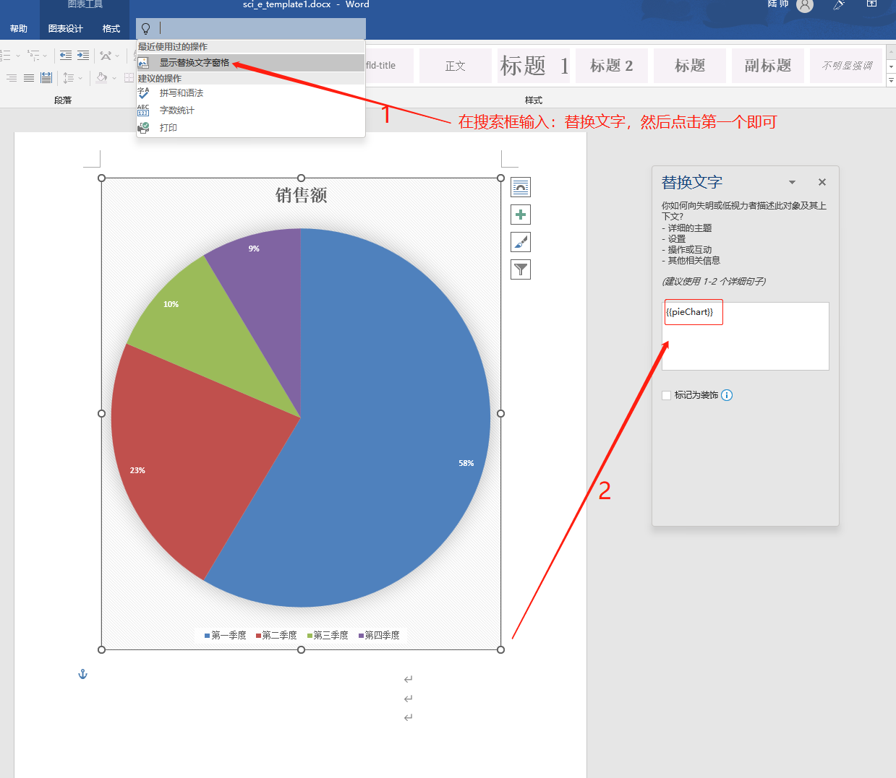

Java如何操作Office办公软件
- 在工作中，大家应该有遇到，用代码去读取或导出Excel、WORD、PDF 这类的需求吧
- 如果有做过这方面的大佬，应该都了解过 Apache POI .
- Apache POI 是用Java编写的免费开源的跨平台的 Java API.
- Apache POI提供API给Java对Microsoft Office格式档案读和写的功能。
- 但是大部分人都是用其他的框架，因为POI比较耗内存，如果导出数据量大的话容易OOM
- 而大部分的其他框架都是基于 POI基础上再次开发的。
- 废话不多说，直接上代码
一、操作Excel
- 操作Excel，现在国内比较出名的就是：阿里的
easyexcel - 在POI的基础上优化与封装，让使用者更简单方便
- Github地址：https://github.com/alibaba/easyexcel
- 文档地址：https://easyexcel.opensource.alibaba.com/docs/current/
- 其实我觉得最好的文档就是他们写的Demo例子：
- 进入Github,然后在源码的：
easyexcel-test模块中 - 找到：
com.alibaba.easyexcel.test.demo这个包下的 - 可以看到有：fill、read、web、write 四个包
- fill 包介绍 Excel 填充的相关示例
- read 就是去读Excel的相关示例
- web 就是我们网页的上传和下载的操作
- write 就是写Excel的相关操作示例
- 上面的4个包里面的代码就是最好的文档。
- 进入Github,然后在源码的：
- 来吧，入门
1、快速使用
导入POM文件
<dependency>
<groupId>com.alibaba</groupId>
<artifactId>easyexcel</artifactId>
<version>3.1.1</version>
</dependency>然后就可以开始使用了：EasyExcel 这个工具类了。
/**
* 最简单的读
* <p>1. 创建excel对应的实体对象 参照{@link DemoData}
* <p>2. 由于默认一行行的读取excel，所以需要创建excel一行一行的回调监听器，参照{@link DemoDataListener}
* <p>3. 直接读即可
*/
public void simpleRead() {
String fileName = TestFileUtil.getPath() + "demo" + File.separator + "demo.xlsx";
// 这里 需要指定读用哪个class去读，然后读取第一个sheet 文件流会自动关闭
EasyExcel.read(fileName, DemoData.class, new DemoDataListener()).sheet().doRead();
}
/**
* 最简单的写
* <p>1. 创建excel对应的实体对象 参照{@link com.alibaba.easyexcel.test.demo.write.DemoData}
* <p>2. 直接写即可
*/
public void simpleWrite() {
String fileName = TestFileUtil.getPath() + "write" + System.currentTimeMillis() + ".xlsx";
// 这里 需要指定写用哪个class去读，然后写到第一个sheet，名字为模板 然后文件流会自动关闭
// 如果这里想使用03 则 传入excelType参数即可
EasyExcel.write(fileName, DemoData.class).sheet("模板").doWrite(data());
}
/**
* 文件下载（失败了会返回一个有部分数据的Excel）
* <p>
* 1. 创建excel对应的实体对象 参照{@link DownloadData}
* <p>
* 2. 设置返回的 参数
* <p>
* 3. 直接写，这里注意，finish的时候会自动关闭OutputStream,当然你外面再关闭流问题不大
*/
("download")
public void download(HttpServletResponse response) throws IOException {
// 这里注意 有同学反应使用swagger 会导致各种问题，请直接用浏览器或者用postman
response.setContentType("application/vnd.openxmlformats-officedocument.spreadsheetml.sheet");
response.setCharacterEncoding("utf-8");
// 这里URLEncoder.encode可以防止中文乱码 当然和easyexcel没有关系
String fileName = URLEncoder.encode("测试", "UTF-8").replaceAll("\\+", "%20");
response.setHeader("Content-disposition", "attachment;filename*=utf-8''" + fileName + ".xlsx");
EasyExcel.write(response.getOutputStream(), DownloadData.class).sheet("模板").doWrite(data());
}
/**
* 文件上传
* <p>1. 创建excel对应的实体对象 参照{@link UploadData}
* <p>2. 由于默认一行行的读取excel，所以需要创建excel一行一行的回调监听器，参照{@link UploadDataListener}
* <p>3. 直接读即可
*/
("upload")
public String upload(MultipartFile file) throws IOException {
EasyExcel.read(file.getInputStream(), UploadData.class, new UploadDataListener(uploadDAO)).sheet().doRead();
return "success";
}如上是最简单的用法，复杂用法可参考
com.alibaba.easyexcel.test.demo这个包下示例
二、操作Word
- 也可以用POI，但是更推荐使用：
Poi-tl - Poi-tl 也是基于 POI 再次封装的。
- Github地址：https://github.com/Sayi/poi-tl
- pot-tl 主要用于 Word模板 导出，在模板中可定制多种类型的数据：包含有文本、图片、表格、列表、图表、等等。
- 有多个版本，使用不同POI 就引入不同的版本，对照表如下：
| 版本 | POI版本 | JDK版本 |
|---|---|---|
| 1.12.0 Documentation(当前最新版本) | Apache POI5.2.2+ | JDK1.8+ |
| 1.11.x Documentation | Apache POI5.1.0+ | JDK1.8+ |
| 1.10.x Documentation | Apache POI4.1.2 | JDK1.8+ |
| 1.10.3 Documentation | Apache POI4.1.2 | JDK1.8+ |
| 1.9.x Documentation | Apache POI4.1.2 | JDK1.8+ |
| 1.8.x Documentation | Apache POI4.1.2 | JDK1.8+ |
| 1.7.x Documentation | Apache POI4.0.0+ | JDK1.8+ |
| 1.6.x Documentation | Apache POI4.0.0+ | JDK1.8+ |
| 1.5.x Documentation | Apache POI3.16+ | JDK1.6+ |
1、快速开始
引入POM
<dependency>
<groupId>com.deepoove</groupId>
<artifactId>poi-tl</artifactId>
<version>1.12.0</version>
</dependency>然后我们要先创建一个word模板，如：
template.docx比如我们在模板中，编写一个： Java如何操作办公软件
我们简单的导出代码如下：
XWPFTemplate template = XWPFTemplate.compile("template.docx").render( |
- 所有的标签都是以 结尾，标签可以出现在任何位置，包括页眉，页脚，表格内部，文本框等，表格布局可以设计出很多优秀专业的文档，推荐使用表格布局。
- 当我们需要遍历的时候就用区块对,
- 区块对由前后两个标签组成，开始标签以?标识，结束标签以
/。 - 图片和图表的使用
- 图片和多系列图表的标签是一个文本：
，标签位置在：图表区格式—> 可选文字—>（新版本Microsoft Office标签位置在：编辑替换文字-替换文字）。 - 我目前是新版本，所以位置在
替换文字。 - 如下图：

- 然后代码如下：
ChartSingleSeriesRenderData pie = Charts.ofPie("编程语言分类", |
- 更多详细用法可参数官方文档：http://deepoove.com/poi-tl/
- 文档还是很详细的。
三、操作PDF
- PDF一般导出功能也挺多的，如：HTML导出为PDF、word导出为PDF、excel导出为PDF等
- 其他我没用过我就不介绍了，我只用过excel导出为PDF。
1、Excel导出PDF
- 在网上找到一个使用：
aspose-cells-8.5.2.jar包的。 - 这个没有可以用的pom地址，需要额外下载。
- 代码如下：
import com.aspose.cells.License; |
- 其中的许可文件：
license.xml内容如下：
|
2、读取PDF
- 其实读取PDF的需求也算常见吧。
- 读取PDF一般用到：
pdfbox或e-iceblue或Aspose.PDF for Java
第一种:pdfbox
- 导入pom
<dependency> |
- 读取文本，代码如下:
public static void main(String[] args) throws IOException { |
- 更多用法参考官方文档：https://pdfbox.apache.org/index.html
第二种:e-iceblue
- 引入POM
<dependency> |
- 使用文档比pdfbox详细很多
- 地址：https://www.e-iceblue.cn/pdf_java_document_operation/create-pdf-in-java.html
- 简单的读取文本：
import com.spire.pdf.PdfDocument; |
第三种:Aspose.PDF for Java
有机会再补充